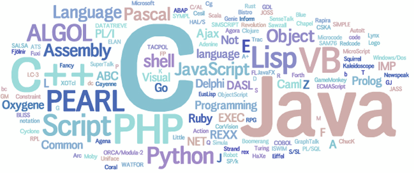

Proyecto Final Sintaxis 2017
1.0
Tabla de contenidos:
Introducción
¿Cómo se usa?
Definicion de Componentes Léxicos
Definición Sintáctica
Interprete
Proyecto Final Sintaxis 2017
Docs
»
Proyecto Final Sintaxis 2017
View page source
Proyecto Final Sintaxis 2017
¶
NumberMaster
¶

Integrantes
¶
Franco Leonardi.
Fernando Pereyra Rausch.
Francisco Tricerri.
Juan Manuel Santa Cruz.
Juan Vera.
Tabla de contenidos:
Introducción
¿Cómo se usa?
Definicion de Componentes Léxicos
Definición Sintáctica
Gramática BNF
Gramática
Tabla de Análisis Sintáctico
Interprete
Analizador Léxico
Analizador Sintáctico
Tabla de Analisis Sintactico
Estructura de Arbol
Interprete
Programa Principal
Indices
¶
Índice
Índice de Módulos